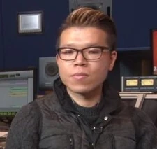
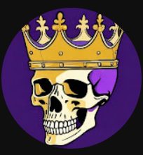
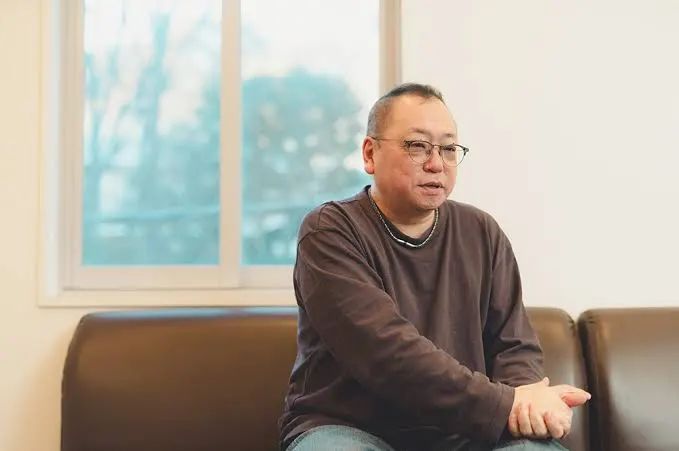
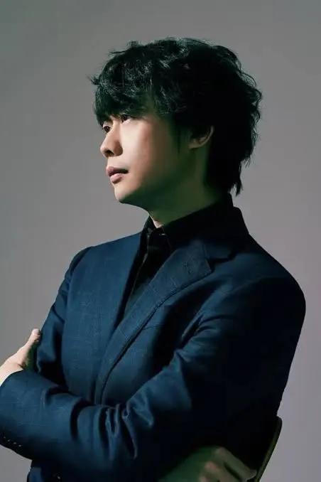

BAO LE
SOUND DESIGNER
SYNTHESIZING - EDITING - RECORDING - SFX - GAME SOUND DESIGN
HIGHLIGHT REEL
2026
ABOUT ME
Hi, I’m Bao Le. I'm a Sound Designer based in the Netherlands, focused on building sound and music that makes games feel alive.
I got into game audio because I’ve always loved games and music, and I wanted to create worlds of my own, not just the story and mechanics, but the feeling behind every moment. While studying , I’ve been learning game design and sound design hands-on, and also teaching myself coding and music theory along the way. I enjoy iterating fast, asking for feedback, and polishing details until everything clicks.
My work often involves synth design, audio implementation, and creating full soundscapes, using , , , and . I've worked as a sound design intern at , and I was the sound designer for Viral Impact, a client project for 's Heeren Loo (supporting people with Mild Intellectual Disability). For that game, I created the music, ambience, and SFX in Ableton, then implemented and scripted the audio using Unity + FMOD.
Outside of tools and plugins, I’m motivated by growth. I like collaborating with people who push my skills, and I’m always looking for the next challenge that makes me better. My goal is to work as a sound designer / composer, crafting audio that players feel as much as they hear.


SKILLS
- Sound Design
- Mixing & Mastering
- Foley
- Post Audio Editing
- Game Audio Implementation
- Composing
- Production Sound
- Field Recording
KNOWLEDGE
- Unity
- FMOD
- Ableton Live
- Serum / Synth Design
- Github / Version Control
- Agile Workflows
- Communication
- Music Production
FAVORITE SOUNDS
- The Burn and its impactful design and powerful bass drop from Fire Force Anime.
- The Magical Skills , from Fate Grand Order: Babylonia, that utilizes synthesizers combined with riser and bass which give make audience have to say "wow".
- The Transformation , from Transformer, that used high quality foley metallic sound combine with synthesizer.
INSPIRATIONAL
SOUND DESIGNERS AND COMPOSER
These are some of the sound designer and composer that I look up to and get inspired from. They show me how sound design and music can truly bring life to games, arts and bring out emotion of people. Everyday I learn to strive forward, learn more about sound design so one day I can also stand up there with the people that I look up to and got inspired from.

Yasumasa Koyama
ImportedMaple
Masafumi Mima
Yu Peng Chen (Composer)CONTACT
I'm open to junior sound design, technical sound design, and game audio opportunities. The fastest way to reach me is on LinkedIn — I usually reply within a day.